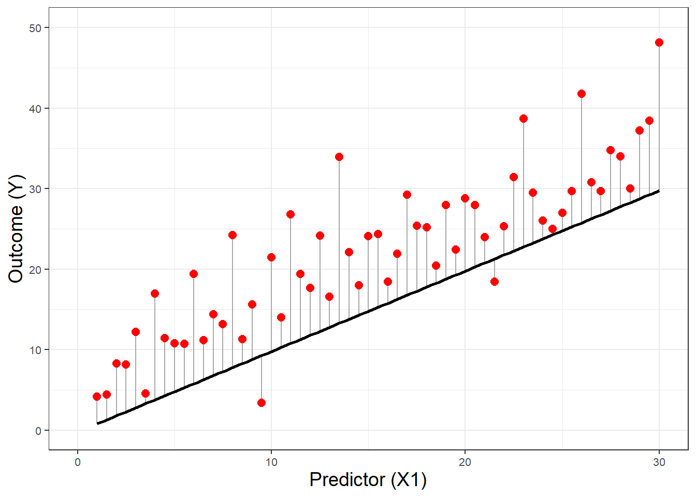
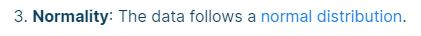
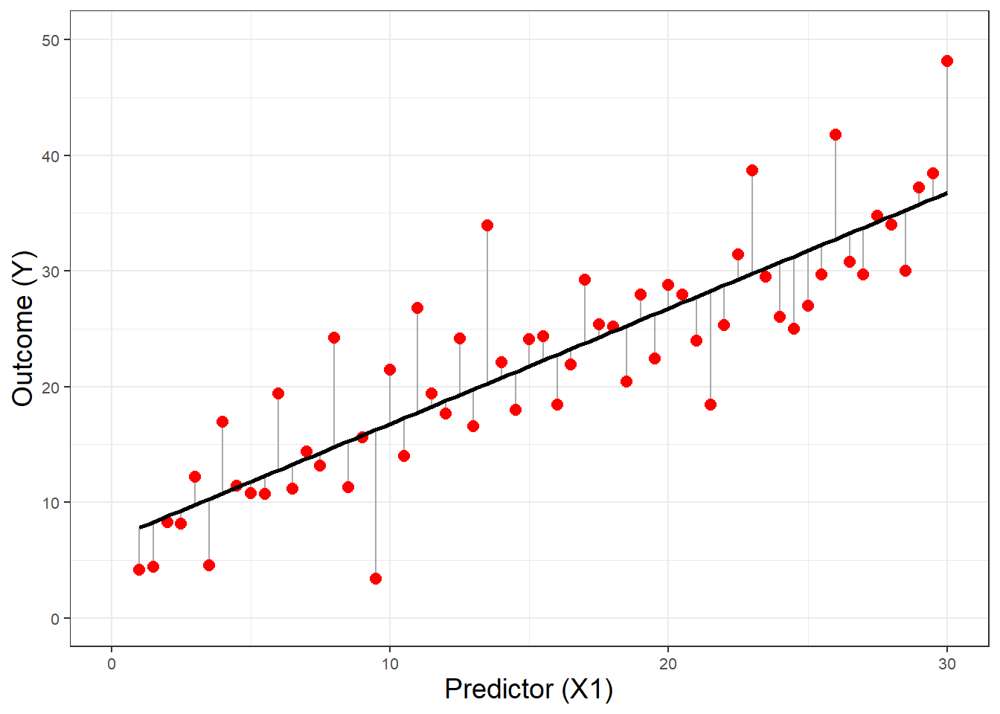
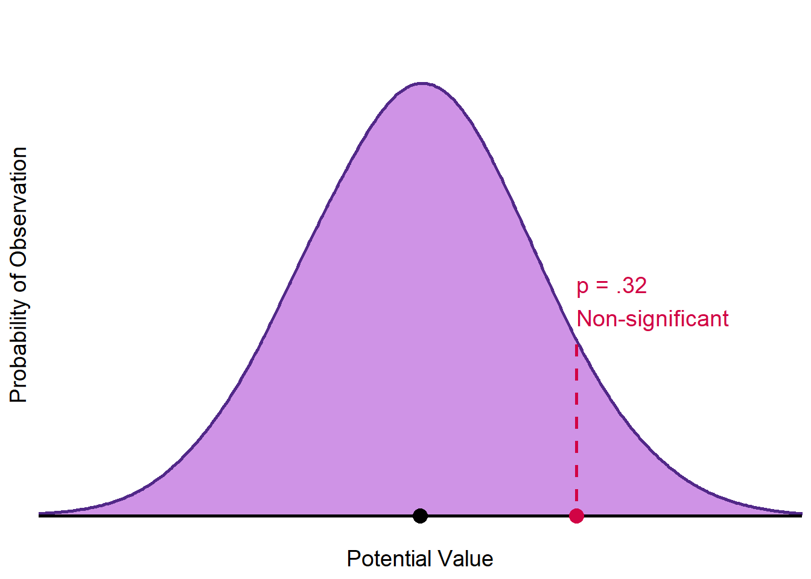
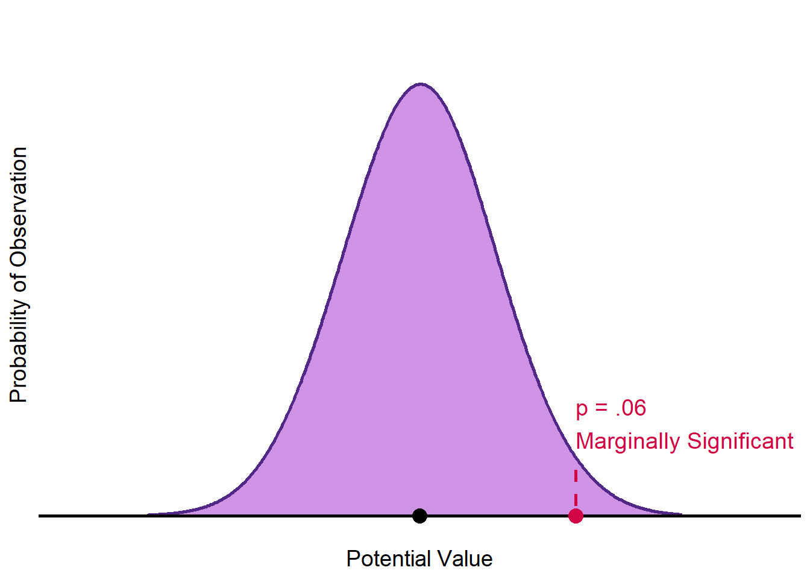
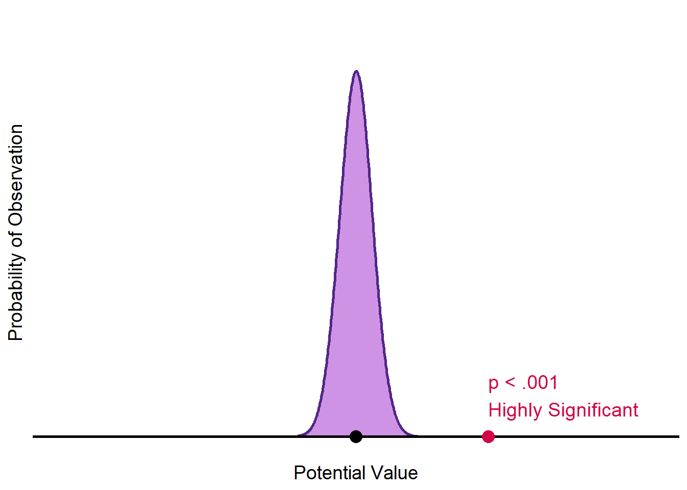
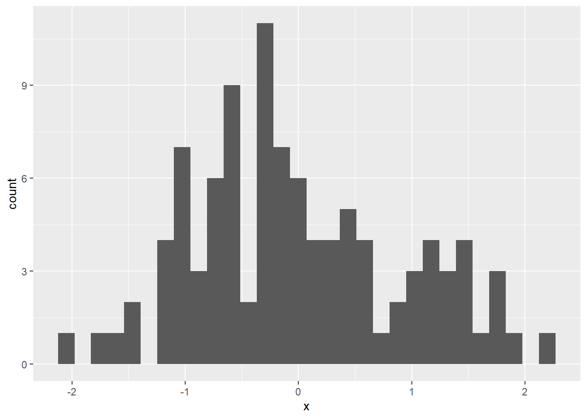
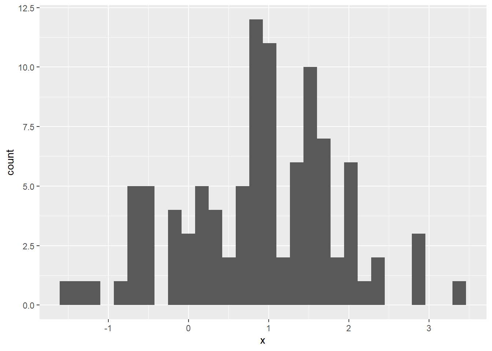

Perhaps one of the most often misunderstood and misrepresented concepts in statistics is that of what we actually make assumptions about. All too frequently, ___ and well meaning stats-help sites will say that we want normally distributed data.

That’s wrong.
Linear models don’t really care how the data is distributed. What they actually care about is how their residuals—the errors in their estimates—are distributed. But why? Why do we care about our models’ errors and why are those often more informative than the data itself?
The Mathematical Answer
Before we dive into the conceptual reasonings behind residual-centered assumptions, let’s take a quick look at the math going on under their hoods. For this explanation, we’ll focus on one of the more basic forms: simple linear regression. I’m going to assume you’re already familiar with the notation below, but if you’d like a quick refresher, this site does a good job of explaining the formula (though be sure to note how they get the assumption of normally distributed data wrong!). In any case, here’s the mathematical formula:
\[ y = \beta_0 + \beta_1 x_1 + \epsilon \]
Where:
\[ \epsilon \sim N(0, \sigma^2) \]
From this, we can make three immediate observations:
- This formula makes no claim about the distribution of \(x_1\). It could be anything.
- \(y\) is a linear function of \(x_1\), implying that the distribution of \(y\) will resemble the distribution of \(x_1\), whatever \(x_1\) happens to be (with an error term allowed, of course).
- The error term must follow a normal distribution, centered around 0, with some constant variance.
Alright! So with these observations in mind, we can now make a number of claims. First, it doesn’t matter what the distribution of our data (\(y, x_1\)) looks like. Our variables could be normal, they could be uniform, they could even be random peaks scattered across infinity. So long as \(x_1\) and \(y\) are linearly related to one another, the math will work. Second, it does matter what the distribution of our errors looks like.
So, then, to answer the original question of why we make residual-focused assumptions:
The math said so.
Convincing, isn’t it?
The Conceptual Answer
Well, if you’re anything like me, the mathematical answer probably isn’t the most satisfying conclusion. Understanding how the math was written doesn’t help us understand why the math was written that way. So, if you’re still wondering what the thinking behind these assumptions is, this section is dedicated to you.
To understand our focus on residuals, we first need to understand what exactly our models are trying to accomplish. Generally speaking, their goals are to (1) estimate some kind of average (average difference between groups, average change of one variable across changes in another) and (2) estimate the significance of that average (assuming the null is true, how likely would we be to see an average this extreme or greater due to random noise?).
In line with that, the assumptions we make when running these models are the assumptions necessary for us to (1) believe we have accurately estimated the average and (2) believe we have accurately estimated the significance of said average1.
1) To accurately estimate the average
In order to calculate an average, you need data that’s at least at the interval level (an implied assumption in most of these models), but otherwise… you’re pretty much good to go. Is the data normally distributed? Doesn’t matter. Do you have outliers? Doesn’t matter 2. Do independent groups have the same variance? Still doesn’t matter. Because an average is just the sum of inputs divided by the number of inputs, the data can be in whatever form it wants to be and you’ll still get your average.
Ok, so we don’t need to make any assumptions about the distribution of the data itself to calculate an average, but how do we know the averages our model reports are accurate to the data? In other words, how do we know we our model isn’t biased?

Put simply, the easiest way to tell if your model’s estimates are biased is to check whether the mistakes it makes average out to 0. If they don’t, that means your model is making a systematic over- or under-estimation.
In the biased model above, the prediction (that solid black line) is pretty consistently below the actual data (those red dots). Its residuals - the errors or the differences between its prediction and the actual data - do not average out to 0. The residuals of the unbiased model do.
Aha! So there’s the first reason we pay attention to residuals and not the data - we don’t need the data to be structured any particular way to calculate an average, but we do need the errors structured a certain way (balancing each other out to 0) to ensure our estimate of that average is unbiased.
2) To accurately estimate the significance
Here’s where the real fun begins.
Accurately estimated significance requires residuals to follow a specific form.
First, though, let’s recap: what is significance? Significance is a representation of how likely we would be to see a value this extreme or greater, assuming the null hypothesis is true. In other words, sometimes random chance makes it looks like something is going on even when it isn’t; how likely would random chance be to make our data look the way it does (or even more extreme) if nothing was actually going on?
To calculate the chance of this happening, we create a probability distribution for the null hypothesis - a distribution that tells us how likely we would be to see each potential outcome due to random fluctuations in sampling. We then check where our observed data lands on that distribution and that tells us how likely (or unlikely) random chance is to have created our data.
That’s important.
Our calculated likelihood depends on the probability distribution we use. Because of this, we could observe the exact same average across different data sets, but make very different claims about that average’s significance depending on how the null distribution turns out. If it’s a distribution with high variance, claims about significance get weaker. If it’s a distribution with tight variance though, claims about significance are much stronger.



So each of these null distributions give us a different answer. Now, how do we know which one to use?
Should we use the wide one? The narrow one? Something entirely different? Which one we choose directly affects the significance result, so we’d better make sure we get it right.
- Talk about normal residuals
- Mention CLT
- Talk about homoscedasticity
With residuals - take a linear relationship, what’s the variance of the data? - What’s the variance of the residuals?
So we calculate the null distribution using error terms as a parameter in a normal distribution. But what happens if our errors aren’t normally distributed? Well now we’re comparing apples to oranges.
- uniform predictor + normal error goes here -
Your model’s errors don’t have to follow the exact same distribution as the null hypotheses’ but, if they don’t, the statistics used to calculate the null hypothesis distribution which your model is then compared to is wrong.
- normal predictor + uniform error goes here -
It’s hard to see this with just one example, so let’s run a quick simulation study. We want to calculate this statistic with 80% power and 5% type 1 error rate. Let’s just see what happens.
Now, here’s something the astute reader may have noticed earlier - in our scatter plot showing biased and unbiased models, our data was NOT normally distributed. It was uniformly distributed, with normal errors!
- sim study goes here -
The model with uniform errors performed worse, because the hypothetical error distribution (null hypothesis) to which it was compared did not match its own actual error distribution.


Footnotes
We also make assumptions that allow us to believe an accurately estimated average is meaningful (e.g., there truly is a linear relationship between variables when running a linear regression).↩︎
Calculating an average with outliers present is not a problem for the math itself, however it may be a problem for interpreting the output. It all depends on the question you’re trying to answer. If what you care about is truly the population average, then it’s fine. Often though, we’re focused on modelling “normal” or “business-as-usual” data that outliers don’t fit the pattern for. In these cases, the presence of outliers can lead to correct but misleading averages.↩︎